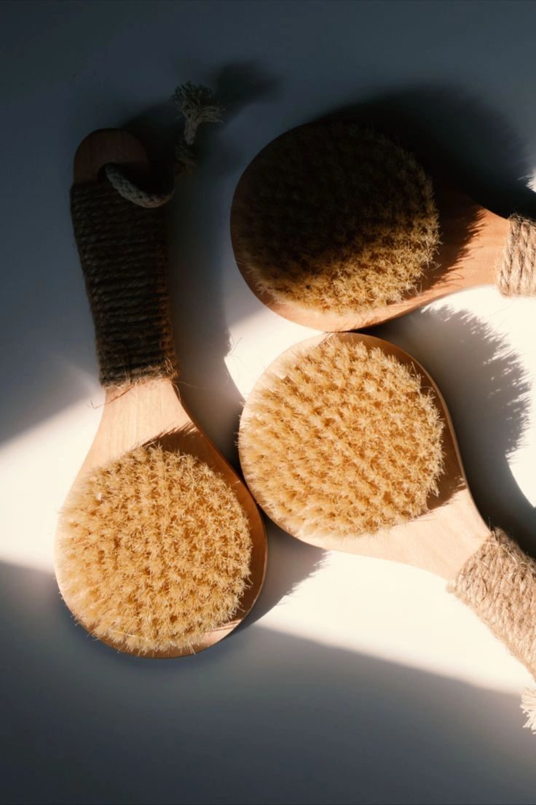

Let’s be honest—
The wellness space is loud.
There are so many products, routines, and “must-haves”… but very few that actually move the needle when it comes to how you feel in your body.
As someone who focuses on gut health, hormone balance, and glowing skin from within, I’ve learned this:
The right tools don’t just add to your routine… they support your body’s natural systems.
These are the 5 wellness tools I consistently recommend because they support:
- Nervous system regulation
- Bloating + digestion
- Lymphatic flow
- Overall glow from within
1. Filter Shower Head
(For nervous system + daily detox support)
This is one of the most underrated upgrades you can make.
Most people focus on what they eat… but forget what they’re absorbing through their skin daily.
Unfiltered water can contain:
- Chlorine
- Heavy metals
- Other irritants that disrupt your skin + microbiome
---> This matters because your skin is your largest detox organ, and constant exposure can contribute to:
- Dry, irritated skin
- Increased inflammation
- Added stress load on the body
Why I love it:
- Turns your shower into a calming, spa-like nervous system reset
- Supports skin barrier + glow
- Easy daily habit with real impact
2. Dry Brush
(For lymphatic drainage + bloating support)
If you struggle with:
- Bloating
- Puffiness
- Sluggish digestion
Your lymphatic system may need support.
Unlike your circulatory system, your lymphatic system doesn’t have a pump… it relies on movement and stimulation.
Dry brushing helps:
- Stimulate lymph flow
- Reduce water retention
- Support detox pathways
***Bonus: It also improves skin texture and glow.
Pro tip: Always brush toward the heart with light strokes.
3. Castor Oil Pack Kit
(For gut health + liver support)
This is one of my favorite tools for women dealing with:
- Hormonal imbalances
- Bloating
- Sluggish digestion
Castor oil packs have been traditionally used to:
- Support liver detox pathways
- Improve circulation
- Calm the nervous system
What I’ve seen:
Consistent use can lead to:
- Less bloating
- More regular digestion
- Reduced inflammation
---> It’s also a powerful way to slow down and support your body at night.
4. Acupressure Mat
(For nervous system regulation + stress relief)
If you feel:
- Constantly stressed
- Bloated no matter what you eat
- Stuck in “fight or flight”
This one is for you.
---> Your nervous system directly impacts digestion.
When you're stressed, your body shifts out of “rest & digest”, which can lead to:
- Bloating
- Poor digestion
- Hormonal imbalance
Why I love it:
- Helps calm the nervous system in just 10–20 minutes
- Encourages full-body relaxation
- Supports stress-related bloating
How to use:
Lay on it before bed or while listening to a podcast. Start with a shirt on, then build tolerance.
5. Magnesium + Epsom Salt Baths
(For deep relaxation + bloating relief)
If there’s one tool that feels like instant relief, it’s this.
Magnesium is essential for:
- Nervous system regulation
- Muscle relaxation
- Hormone balance
- Digestion
And most women are not getting enough.
---> Low magnesium can show up as:
- Stress + anxiety
- Poor sleep
- Bloating + constipation
Why it works:
Epsom salts (magnesium sulfate) help:
- Relax the body and calm the mind
- Reduce inflammation
- Support detox pathways
How to use:
- Add 1–2 cups to warm water
- Soak for 15–20 minutes
- Best in the evening for sleep support
No Bathtub? Try This Instead
Foot Soaks
- Soak feet in warm water + Epsom salt
- Still supports relaxation + nervous system
Magnesium Oil Spray
- Spray on legs, feet, or stomach
- Great for sleep, tension, and cramps
Shower Reset Hack
Use your filtered shower + steam + deep breathing
- Follow with magnesium oil
---> This creates a simple nervous system reset at home
You don’t need to do everything to feel better.
But when you start supporting your body with the right tools, you’ll notice:
- Less bloating
- Better digestion
- More energy
- A calmer, more regulated nervous system
Small, consistent shifts lead to real transformation.
Ready to Go Deeper?
If you’re tired of feeling bloated, inflamed, and out of sync with your body…
---> Book your free wellness transformation call
and let’s get to the root cause of what’s going on.